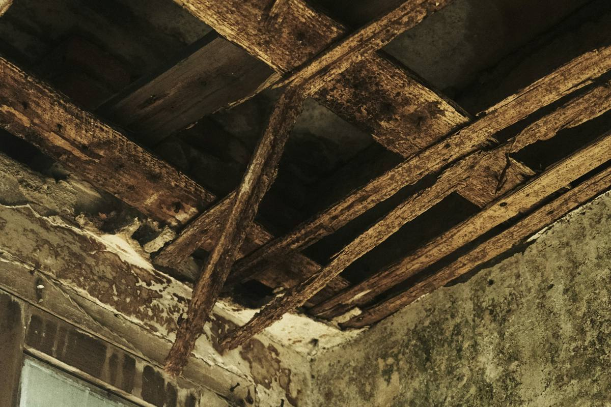
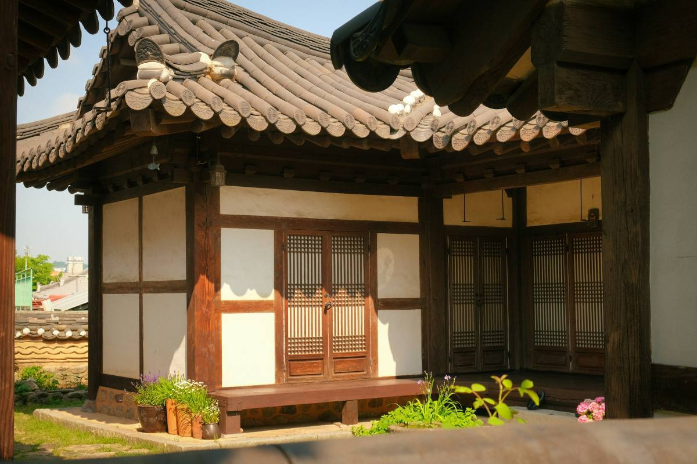

충남 홍성에서 시골집 고치기 15년 · 예산·청양·보령까지
오래된 집,
오래 살
집으로
단열·창호·지붕, 재래식 부엌·화장실 입식으로, 기름보일러 교체. 견적은 현장에 가서 보고 드립니다.
전화 010-0000-0000 · 일요일은 쉽니다

참고 이미지전화
집 위치와 고칠 곳을 알려 주세요.
 참고 이미지
참고 이미지현장 보기
직접 가서 봅니다. 돈 받지 않습니다.
 참고 이미지
참고 이미지견적
현장을 보고 견적을 드립니다.

참고 이미지공사·사진 소식
공사 중 사진을 카톡으로 보내 드립니다.

정리된 상담 내용
문자로 문의 받으시는지 확인 후 "문자로 보내기" 버튼
고치기 전에 확인해 볼 공공 제도
해당되는지, 얼마인지, 올해 접수하는지는 해마다 바뀌고 시·군마다 달라요. 꼭 시·군청이나 읍·면사무소에 확인하세요. 섬돌집고침이 지원 여부를 정하거나 약속하지 않습니다. (공식 누리집 기준, 2026-10-22 확인)
입력한 내용은 이 화면에서만 쓰이고 어디에도 저장되지 않습니다.
빈집 사기 전에, 같이 가 드립니다
"빈집 사기 전에 집 상태 같이 봐 달라는 분도 계신데, 그것도 같이 가 드립니다."— 박섬돌 대표
사장님께 확인 후 채울 내용
비용: 무료 / ○만원 · 보는 곳: 지붕·기둥·바닥·습기·화장실·보일러 등
드리는 것: 말로 설명 / 사진 메모 / 대략 비용 범위
"공사 중에는 사진 찍어서 카톡으로 보내 드려요. 멀리 사시는 자녀분들이 좋아하십니다."— 박섬돌 대표
대표와 동생, 두 사람이 다닙니다
- 대표박섬돌
- 함께 일하는 사람대표의 동생 이름전기·설비는 아는 기술자분들과 같이 합니다
- 경력시골집 고치는 일 15년째
- 다니는 곳홍성 · 예산 · 청양 · 보령
- 쉬는 날일요일
- 사업자등록번호000-00-00000
- 면허실내건축공사업 등 보유 여부
- 보험영업배상책임보험 가입 여부·한도
- A/S공사 후 하자 처리 기준
두 분 사진 (작업복, 현장) — 참고 이미지로 대신하지 않음
현장을 보고 나서 견적을 드립니다
견적 보러 현장에 가는 비용
받지 않습니다
견적
현장을 보고
| 공사 | 비용 범위 | 보통 기간 |
|---|---|---|
| 재래식 화장실 입식 개조 | ○백만~○백만 원 | ○일 |
| 기름보일러 교체 | ○백만 원~ | ○일 |
| 슬레이트 지붕 교체 (철거 별도) | ○백만~ | ○일 |
홍성·예산·청양·보령에서 고친 집
고치기 전·후 사진 + 날짜 · 면 단위 지역 · 공사 범위(배관·전기 포함 여부) · 기간 · 비용 범위, 3건
맡기기 전에 많이 물어보세요
도시에 사는데, 시골 부모님 댁 공사를 맡겨도 되나요?
손님 중에 시골에 부모님 집이 있는 자녀분들이 많습니다. 공사 중에는 사진을 찍어 카톡으로 보내 드립니다.
견적 받으려면 돈이 드나요?
현장 보러 가는 건 돈 받지 않습니다. 견적은 현장을 보고 드립니다.
어디까지 오시나요?
홍성, 예산, 청양, 보령까지 다닙니다.
그 밖의 지역: 가능 여부 확인
슬레이트 지붕도 철거해 주시나요?
슬레이트 철거는 허가받은 업체가 하고, 섬돌집고침은 새 지붕을 올립니다.
참고로, 법에서는 석면이 든 슬레이트를 고용노동부에 등록된 석면해체·제거업체가 해체·제거해야 하는 경우가 있습니다(산업안전보건법 제122조). 철거·처리 비용을 지원하는 "슬레이트 처리 지원사업"은 집이 있는 시·군청에 문의하세요. 제도 설명 (대한민국 정책브리핑)
지원금을 받을 수 있나요?
지원 여부는 시·군청이 정합니다. 위의 "상담 내용 정리"에서 고르시면, 확인해 볼 제도 이름과 묻는 곳, 공식 안내 링크를 보여 드립니다.
일요일에도 오시나요?
일요일은 쉽니다.
공사 끝나고 문제가 생기면요?
A/S(하자 처리) 기준 — 사장님 확인 후 작성